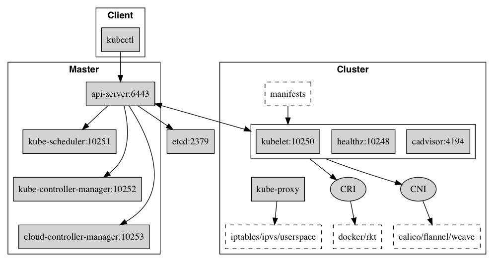

核心组件

Kubernetes 主要由以下几个核心组件组成:
- etcd 保存了整个集群的状态；
- API Server 提供了资源操作的唯一入口，并提供认证、授权、访问控制、API 注册和发现等机制；
- Controller Manager 负责维护集群的状态，比如故障检测、自动扩展、滚动更新等；
- Scheduler 负责资源的调度，按照预定的调度策略将 Pod 调度到相应的机器上；
- Kubelet 负责维护容器的生命周期，同时也负责 Volume（CVI）和网络（CNI）的管理；
- Container Runtime 负责镜像管理以及 Pod 和容器的真正运行（CRI）；
- Kube-proxy 负责为 Service 提供 cluster 内部的服务发现和负载均衡；
组件通信
Kubernetes 多组件之间的通信原理为
- API Server 负责 etcd 存储的所有操作，且只有 API Server 才直接操作 etcd 集群
- API Server 对内（集群中的其他组件）和对外（用户）提供统一的 REST API，其他组件均通过 API Server 进行通信
- Controller Manager、Scheduler、Kube-proxy 和 Kubelet 等均通过 API Server watch API 监测资源变化情况，并对资源作相应的操作
- 所有需要更新资源状态的操作均通过 API Server 的 REST API 进行
- API Server 也会直接调用 Kubelet API（如 logs, exec, attach 等），默认不校验 Kubelet 证书，但可以通过
--kubelet-certificate-authority开启（而 GKE 通过 SSH 隧道保护它们之间的通信）
比如典型的创建 Pod 的流程为

- 用户通过 REST API 创建一个 Pod
- API Server 将其写入 etcd
- Scheduluer 检测到未绑定 Node 的 Pod，开始调度并更新 Pod 的 Node 绑定
- Kubelet 检测到有新的 Pod 调度过来，通过 Container Runtime 运行该 Pod
- Kubelet 通过 Container Runtime 取到 Pod 状态，并更新到 API Server 中
端口号

Master node(s)
| Protocol | Direction | Port Range | Purpose |
|---|---|---|---|
| TCP | Inbound | 6443* | Kubernetes API server |
| TCP | Inbound | 8080 | Kubernetes API insecure server |
| TCP | Inbound | 2379-2380 | etcd server client API |
| TCP | Inbound | 10250 | Kubelet API |
| TCP | Inbound | 10251 | kube-scheduler healthz |
| TCP | Inbound | 10252 | kube-controller-manager healthz |
| TCP | Inbound | 10253 | cloud-controller-manager healthz |
| TCP | Inbound | 10255 | Read-only Kubelet API |
| TCP | Inbound | 10256 | kube-proxy healthz |
Worker node(s)
| Protocol | Direction | Port Range | Purpose |
|---|---|---|---|
| TCP | Inbound | 4194 | Kubelet cAdvisor |
| TCP | Inbound | 10248 | Kubelet healthz |
| TCP | Inbound | 10249 | kube-proxy metrics |
| TCP | Inbound | 10250 | Kubelet API |
| TCP | Inbound | 10255 | Read-only Kubelet API |
| TCP | Inbound | 10256 | kube-proxy healthz |
| TCP | Inbound | 30000-32767 | NodePort Services** |